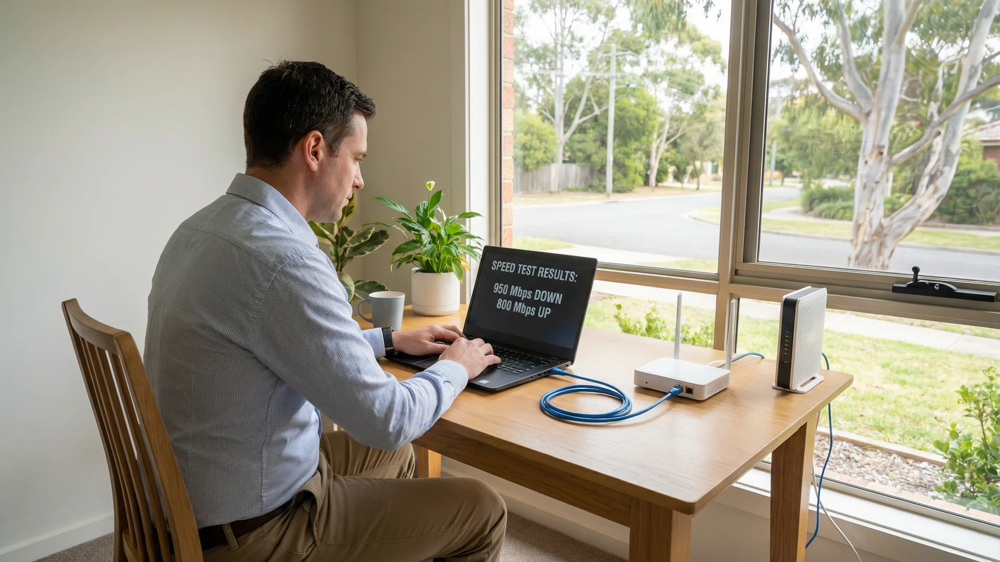
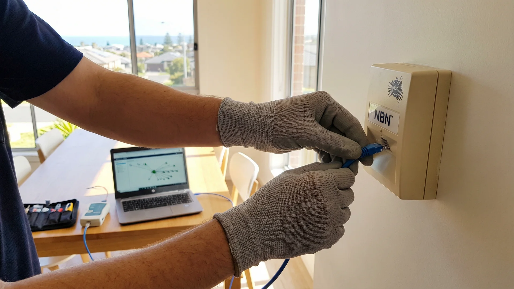
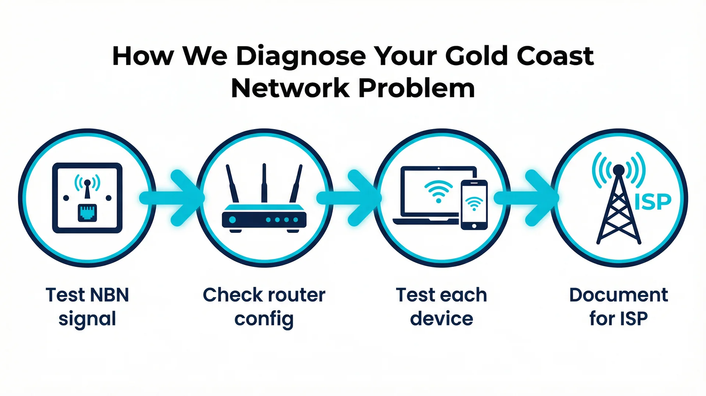

Internet dropping out, slow at certain times, one device not connecting or the whole network down? We diagnose and fix network problems at your Gold Coast home — finding the real cause rather than guessing. Same-day service available.
Network problems are frustrating precisely because the symptoms rarely tell you where the fault is. A dropout could be the router, the modem, the NBN line, a faulty cable or an ISP issue — they all look the same from where you’re sitting. We diagnose methodically at your Gold Coast home and fix what we find. This service is part of our networking & WiFi Gold Coast offering. If your diagnosis reveals a router or WiFi issue, see our router & modem setup Gold Coast and WiFi installation & configuration Gold Coast services.
Most households on the Gold Coast now have four or more devices connected at any one time — phones, laptops, smart TVs, tablets, smart speakers and home automation gear. When one of those connections fails, or when the whole network becomes unreliable, the cause is rarely obvious. A slow connection at 7pm in a Robina home could be a congested WiFi channel, a router that needs a firmware update, or a genuine NBN line fault. The only way to know is to test each possibility in order.

Network troubleshooting and diagnostics is not the same as rebooting the router. A proper diagnosis means testing the NBN connection independently of your in-home equipment, checking the router’s logs and configuration, measuring signal strength across different areas of the home, and testing individual devices to rule out device-level faults. It takes time to do properly, and it gives you a clear answer rather than a temporary fix that fails again two weeks later.
Small businesses on the Gold Coast face the same problems as households, but the impact is higher. A cafe in Broadbeach that loses its internet connection loses its EFTPOS terminal. A small office in Southport where the network drops out during video calls loses productive hours. The diagnostic process is the same — methodical, starting from the NBN connection point and working inward — but the urgency is different. Same-day appointments are available for business customers across all Gold Coast suburbs.
Intermittent connection dropping out at your Gold Coast home? We test the full path from NBN connection point to router to devices — isolating whether the fault is hardware, cabling or a line issue with your ISP.
Getting far less speed than your NBN plan should deliver? We run wired and wireless speed tests, check router configuration, test the NBN connection directly and identify exactly where your Gold Coast connection is losing speed.
One device that refuses to connect while everything else works fine is a specific problem with a specific fix. We diagnose and resolve device-level network issues at your Gold Coast home — laptops, phones, smart TVs and smart home devices.
We test your NBN connection independently of your router — checking sync speed, line attenuation and connection stability to determine whether a fault lies with your ISP or your in-home equipment.
If the fault sits with your provider we document our findings with the technical detail your ISP needs to raise a line fault — saving you hours of back-and-forth with a call centre.
Something wrong but you don’t know where to start? We run a complete diagnostic of your Gold Coast home network — every device, connection, router setting and NBN endpoint — and give you a clear picture of what’s wrong and what’s not.
Choosing who to call when your internet is down is not always straightforward. Most people try the obvious things first — restarting the router, checking the cables, calling their ISP. By the time they call a local technician, they’ve usually spent hours going in circles. The difference with a proper on-site diagnostic is that you get a definitive answer, not another thing to try.
Gold Coast homes vary a lot in how they’re set up. Older houses in Nerang or Helensvale may have original telephone cabling that degrades NBN signal. Newer builds in Coomera or Pimpama often have structured cabling that works well but can still develop faults at patch panels or wall sockets. Apartments in Surfers Paradise or Broadbeach may share infrastructure that creates interference. Understanding the local environment matters when diagnosing network faults.
We don’t restart the router and hope for the best. We test methodically — modem, router, cabling, NBN line and devices — until we know exactly what is causing your Gold Coast network problem.
If the fault is on your provider’s side we give you documented technical findings to take to your ISP — so you’re not starting the conversation from scratch with a call centre.
Most Gold Coast call-outs within 2–4 hours. Same-day network diagnostics available across all suburbs.
If we can’t identify or resolve the fault, you don’t pay the call-out fee.
Bcom IT Solutions (ABN 92 636 893 108) diagnoses and fixes network problems across the entire Gold Coast. Whether you’re in Southport, Robina, Burleigh Heads, Nerang, Helensvale, Coomera, Palm Beach or Varsity Lakes — we come to your home and work through the problem methodically until we find it. If the fault turns out to be a WiFi or router issue we can fix it in the same visit. If it’s an NBN line fault we document everything you need to escalate it properly. Call 07 3041 8993 to book or to talk through what you’re seeing before booking. For WiFi dead spots rather than dropout issues, see our WiFi range extension Gold Coast service.
Network issues on the Gold Coast tend to cluster around a few common patterns. Homes in Burleigh Heads and Palm Beach that were built in the 1990s often have ageing internal phone cabling that was never designed for FTTC or FTTN NBN connections. The signal degradation from a single corroded connector can cause dropouts that look identical to an ISP fault. Homes in newer estates in Coomera and Upper Coomera are more likely to have structured cabling, but the patch panels in those homes are often installed in poorly ventilated cupboards where heat causes intermittent failures.
Apartments in Surfers Paradise, Broadbeach and Southport present a different set of challenges. Shared building infrastructure means your NBN connection may pass through distribution frames that are managed by the building, not your ISP. Interference from neighbouring WiFi networks is also more pronounced in high-density areas. Diagnosing a network problem in an apartment requires a different approach than diagnosing the same problem in a freestanding house in Robina or Varsity Lakes.

The NBN rollout across the Gold Coast used several different connection technologies depending on the area and when it was built. FTTP (fibre to the premises) areas like parts of Coomera and Pimpama generally have more stable connections. FTTN (fibre to the node) areas, which cover much of the older Gold Coast, are more susceptible to line faults because the final connection from the node to your home runs over copper telephone cabling. FTTC (fibre to the curb) areas sit somewhere in between. Knowing which technology your home uses is the starting point for understanding what can go wrong and where to look first.

When we arrive at a Gold Coast home for a network diagnostic, we bring a test laptop with network analysis software, a separate NBN test device, a wireless spectrum analyser and a set of patch cables. We start by replicating the fault in front of the homeowner so we understand exactly what they’re experiencing. We then test the NBN connection at the wall socket, bypassing the modem and router entirely. This single test tells us whether the problem is inside the home or outside it. If the NBN connection is clean at the wall, we work inward through the modem, the router, the cabling and finally the devices. If the NBN connection is already degraded at the wall, we document the test results and help the homeowner raise a line fault with their provider.
Or call 07 3041 8993
Here’s exactly what happens from the moment you call to the moment we leave.
When you call 07 3041 8993 we ask specific questions — when the problem started, whether it affects all devices or just one, whether it’s constant or intermittent, and what your NBN connection type is. The more detail you can give us the faster we can diagnose on arrival. Same-day or next-day availability confirmed on the call.
We bring a laptop with network diagnostic software, a separate NBN test device, patch cables and a wireless analyser. We start by replicating the fault in front of you — understanding exactly what you’re experiencing before touching any settings.
We test the NBN connection at the wall socket first, then through the modem, then through the router, then to individual devices — isolating exactly where the fault sits. We explain what each test is showing as we go so you understand what we’re finding and why.
If the fault is in your home equipment we fix it before we leave. If it’s a line fault on your ISP’s side we give you a written summary of our test results with the technical detail your provider needs to raise and prioritise the fault — so you’re not starting from zero with a call centre.
Most Gold Coast network troubleshooting visits take 1–2 hours. Same-day appointments available across all suburbs.
Bcom IT Solutions finds the root cause of network problems across all Gold Coast suburbs — methodical diagnosis, honest findings, fixed on the spot or fully documented for your ISP.
Last updated: March 2026